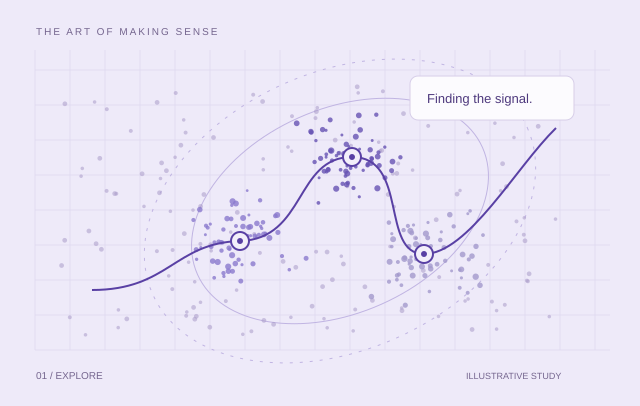

Five analytical pillars, 20 segments, and one connected view for banking teams.
DATA ANALYST / BUSINESS INTELLIGENCEPORTFOLIO / 2026
Less noise.
More insight.
I’m Minh (Nolan). I connect data, analytics and engineering to turn complex questions into clear, useful decisions.

LEARNING & BUILDING WITH
KPIMANALYTICS
VingroupAI BOOTCAMP
HUMGDATA SCIENCE
GoogleCAREER CERTIFICATES
01 / Selected work2025 — 2026
Real questions.
Thoughtful solutions.
A selection of projects across business intelligence, data engineering and applied machine learning.
Connecting CVAT, GitHub and Power BI so a team can focus on quality, not manual reports.
A streaming pipeline connecting live orders, demand forecasting and inventory decisions.
A structured data foundation for exploring traffic across space and time.
Combining CNN, Bi-LSTM and Attention to explore HPG and MBB price dynamics.
A decade of workforce data translated into an executive reporting suite.
02 / A BIT ABOUT ME
Đinh Công MinhNOLAN / Hanoi, Vietnam
Curiosity meets
analytical thinking.
I’m a final-year Data Science student at Hanoi University of Mining and Geology. My work sits at the intersection of business intelligence, data systems and applied AI.
From customer segmentation at KPIM Analytics to annotation reporting at Vingroup AI Bootcamp, I enjoy making complex workflows easier to understand and use.
How I approach a problem
01
Ask the right question
Start with the business context and the decision that needs to be made.
02
Build a reliable foundation
Clean, model and validate the data before drawing conclusions.
03
Make the insight useful
Deliver a clear dashboard, a reproducible model or a workflow people can use.
THE TOOLKIT
01 / Analyze & explain
SQL · Python · Pandas · Statistics
02 / Model & visualize
Power BI · DAX · Star Schema · Tableau
03 / Engineer & deploy
Kafka · PostgreSQL · Docker · MLflow
03 / JourneyRésumé
The journey so far.
Hands-on work, continuous learning.
09/2026 – Present
Trainee - Vingroup AI Bootcamp (Level 2 & 3)
Vingroup • AI Enterprise Cohort 4 (Khóa 4)
More about this role
- Advanced Enterprise AI Training: Qualified through technical assessments into Level 2 & 3 of Vingroup AI Bootcamp, specializing in Computer Vision and industrial-grade dataset curation.
- Build Phase Team Lead (Auto Annotation Reporter): Led a 5-member team engineering an automated reporting pipeline (CVAT REST API + GitHub API) and a 5-page Hybrid Power BI dashboard saving 2–4h per weekly review session.
- Tooling & Model Benchmark Evaluation: Established automated Structural Validator tests with CVAT; evaluated benchmarks across Video Tracking, Multi-Object Tracking (MOT), and Re-Identification (ReID).
04/2026 – 08/2026
Business Intelligence Analyst Intern
KPIM (Knowledge & Process Intelligence Management)
More about this role
- 360° Customer Segmentation System: Engineered 5-pillar customer stratification (Value, Relationship, Lifecycle, Risk, Product) with 20 categories; applied Youden's J to establish optimal 491-point risk cutoff (J=0.55).
- Executive Dashboards & Delivery Documentation: Built interactive Power BI reports (Cross-Sell Matrix, Customer Retention, CIF Profile) and delivered enterprise PM documentation (PM Docs).
- Corporate Training Teaching Assistant (VNPT & Agribank): Facilitated hands-on enterprise analytics workshops as a Teaching Assistant (TA) for corporate clients, including Applied Power BI Data Analytics at VNPT and Excel & Power BI Analytics at Agribank; directly coached working professionals on DAX formulas, data modeling, and automated KPI reporting.
2025 – 2026 (In Progress)
Capstone Project: Streaming MLOps Pipeline & Demand Forecasting
Faculty of Information Technology - HUMG
More about this role
- Streaming Architecture & Data Lakehouse: Ingested real-time orders via Apache Kafka, stored Parquet on MinIO S3, and served PostgreSQL Star Schema for analytical reporting.
- MLOps & Closed-Loop Retraining: Managed LightGBM/Deep Learning model lifecycles via MLflow, served inference via FastAPI, tracked data drift automatically, and monitored via Prometheus/Grafana.
2025 - 2026
University Scientific Research Project
Hanoi University of Mining and Geology (HUMG)
More about this role
- Problem Scoping & Ingestion Pipeline: Scoped research objectives for urban traffic dynamics; designed robust storage architecture and ingestion flows capable of scalable spatio-temporal data ingestion.
- Data Integrity Management & Analytics Serving: Normalized relational schema to 3NF in PostgreSQL, established data integrity validation mechanisms, and prepared clean datasets for analytical modeling and committee defense.
04 / CREDENTIALS
Learning, with evidence.
Professional certificates from Google.
05 / HAVE A QUESTION OR AN OPPORTUNITY?
Good work starts
with a conversation.
Let’s talk about data, an interesting problem, or what we could build together.